Type of Distribution
_________________
Open classes model transaction workloads where the number of
requests in the system fluctuates over time and transactions arrive at the
system as if generated by an infinite source. The arrival pattern is well
described by a probability distribution, in particular, the distribution
of the interarrival times of consecutive transactions, or customers.
A probability distribution f(x) is characterized by
Mean (if exists):

Variance (if exists):

CV, Coefficient of Variation, only if mean and variance exist
and mean is not zero:

JSIM allows you to use any of the following probability
distributions:
Constant: 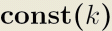
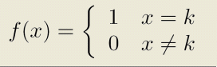
The mean is equal to k, which is the parameter
you must specify.
This distribution describes a constant flow of customers, arriving exactly
every k time units.
__________
Erlang: 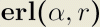
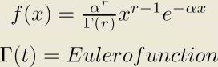
The Erlang distribution is a continuous distribution, with
2 parameters: the shape r, an integer value, and the rate
α, a real value. It is a special case of Gamma distribution
where the shape parameter is an integer.
Γ(t) is called Eulero function and is defined by

When r is a real non null positive integer, as in the
case of the Erlang distribution, the Eulero function reduces
to Γ(r)=(r-1)!
A random variable (r.v.) with Erlang distribution
of order r can be obtained as a sum of r exponentially
distributed random variables with mean 1/rα.

When you change the values of α and r, the system
will automatically adjust the mean = r/α
and the variance σ^2 = r/α^2.
A family of probability density functions and cumulative distribution
functions that illustrate the impact of various (r, α) pairs is
shown below.
Probability density function
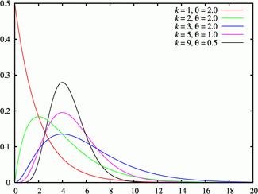
Cumulative distribution function
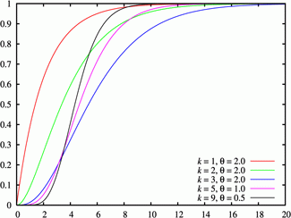
|
__________
Exponential: 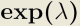
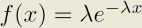
This is a continuous probability distribution where λ
> 0 is the distribution parameter, often called the rate
parameter; the distribution is supported on the interval [0,∞).
The exponential distribution is used to model Poisson
processes, which are processes describing state changes of a system that occur
with constant probability per time unit λ.
In this case, the time interval between two consecutive changes is
described by an exponential random variable with parameter λ.
Therefore, if the system is in state A at time t = 0, the integral
of f(t) from 0 to T over t represents the
probability that the system is in state B ay time t = T.
When you select this distribution, the parameter λ is
requires (real number) and the mean is computed as
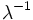 while the variance is
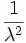
A family of probability density functions and of cumulative distribution
functions is shown below, for a set of λ values.
Probability density function
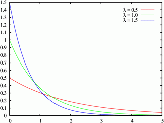
Cumulative distribution function
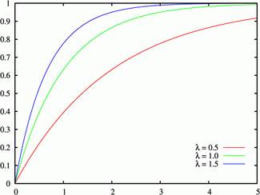
|
__________
Gamma: 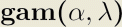
This is a continuous probability
distribution. The parameters are the shape α and the
scale λ, both real numbers.
When you choose the Gamma distribution, you can either
provide α and λ or the distribution mean, equal to α*λ
and the variance α*λ^2.
A family of probability density functions and of cumulative distribution
functions is shown below, for a set of α and λ values.
|
Probability density function

Cumulative distribution function

|
___________
Hyperexponential: 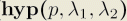
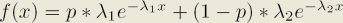
A hyperexponential distribution describes a random
variable similar to an exponential but with more variability since it
is the result of a weighted sum of two independent exponentially distributed
random variables, with paramters λ1 and λ2 respectively.
The weight is the probability P that the random variable behaves
like the exponential variable with parameter λ1 and 1-P that it behaves
like the exponential variable with parameter λ2.

When this distribution is used to model the customer
interarrival time at a station (or the service time at that station), with
probability P the next interval before an arrival (service time) is
distributed like the upper branch in the figure above and with probability
1-P it will be distributed like the lower branch in the figure.
A family of probability density funtions and of cumulative
distribution functions for a set of (λ1, ═) pairs with P = 0.3 is
illustrated in the picture below. Note that when λ1 = λ2, the
hyperexponential reduces to a simple exponential.
IMMAGINE DELLE CURVE COME NEGLI ALTRI CASI PER (3, 10), (4, 8) (5, 5) (8, 4) (10, 3).
___________
Normal: 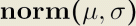

The Normal distribution is also called Gaussian since
its probability density function is the Gaussian function. It is well
known for its bell-shaped density function.
The two parameters are μ=location (real number, it is the mean of the
distribution), and σ =scale (real number, it is the variance).
The density is symmetrical around the mean and the variance indicates
how "e;wide"e; the bell is.
μ and σ correspond to m and c, respectively, in the input
boxes when inserting the distribution parameters.
The standard normal distribution
is the normal distribution with μ = 0 (mean equal 0) and
σ = 1 (variance equal 1).
A family of probability density functions and cumulative distribution functions
is illustrated in the picture below. The standard distribution is
depicted in green.
Probability density function
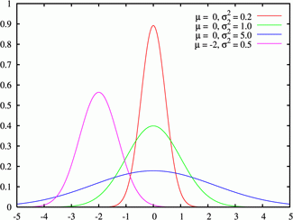
Cumulative distribution function
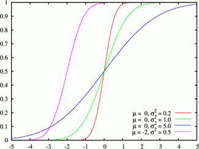
|
__________
Pareto: 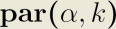
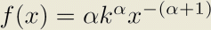
This distribution usually describes
social and economical phenomena (typically, the distribution of wealth,
where a small portion of the people owns the larger part of the wealth).
It is charcaterized by the parameters k>0, location (real) and
α>0, shape (real).
When requested to input the distribution parameters,
if k and α are provided, the system automatically derives the
mean m = k*α/(α - 1) for k>1 and the variance c
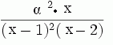
A famility of probability density functions and cumulative
distribution functions is illustrated in the picture below.
Probability density function
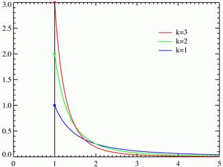
Cumulative distribution function
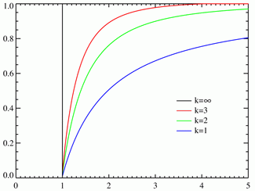
|
________
Poisson: 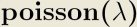
The Poisson distribution describes the number of events
occurring over a given time interval, when such events are independent of
the amount of time elapsed and they occur at a fix average rate.
It is a discrete probability distribution characterized by a single
parameter, λ, a positive real number, which is the average number of
events in a time unit and its variance.
Thus, the probability of having an arrival in a time interval (t, t+Δt)
is λΔt + O(Δt), while the probability of more than one
arrival in the same interval is O(Δt).
For large time intervals, the distribution is near the mean value, thus
the number n or arrivals over the interval is given by n = λ*T,
where T is the length of the interval.
A characteristic of the Poisson distribution is that the time intervals
between two consecutive events is exponentially distributed with average
Δ.
The parameter λ is not only the mean number
of occurrences but also its variance.
A famility of probability density functions and
cumulative distribution functions is illustrated in the picture below.
The connecting lines in the graphs are only guides for the eye and do not
indicate continuity.
|
Probability distribution function
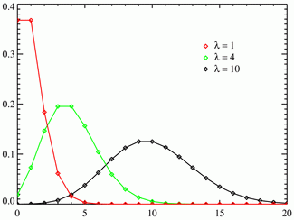
Cumulative distribution function
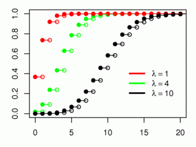 |
__________
Replayer: 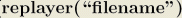
When Replayer is chosen, a trace of data can be played back
as the source of the distribution for service times or interarrival times.
The file format is TEXT/BINARY with values separated by
CR ("Carriage Return").
In order to use this distribution, provide the absolute path name of the
file in the input window.
__________
StudentT: 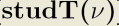
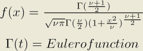
The t-distribibution, or Student t-distribution, is a
continuous distribution characterizaed by the single parameter ν, a real
positive number. It is used when the mean of a normally distributed population
must be estimate using only a small sample size. It is the basis of the
Student-t's test that is used ot evaluate the statistical significance of
the difference between two sample means and for the differencce between
two population means.
It is a special case of the generalised hyperbolic distribution.
The mean is 0 for $#957; > 1 and the variance is ν/(ν -2) for
ν > 2 (infinite otherwise).
A family of probability density functions and cumulative distribution
functions for a set of ν values are illustrated in the picture below.
|
Probability density function
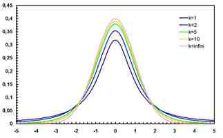
Cumulative distribution function
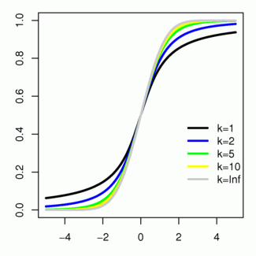 |
__________
Uniform: 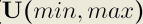
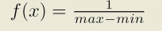
The Uniform distribution is sometimes called rectangular
due the shape of its density function.
It describes a random variable that can assume values over the range
(min, max), its characterizing parameters, with constant probability
equal to 1/(max - min). The probability is 0 outside the range.
When you choose this distribution, you can either provide the pair
(min, max) or the mean m = (max + min)/2 and variance
c = (max - min)^2 / 12.
The probability density function and cumulative disrtribution
function are plotted in the figure below.
|
Probability density function
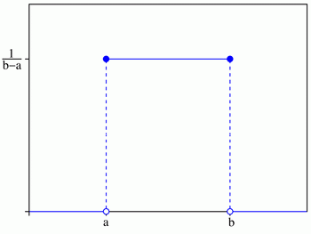
Cumulative distribution function
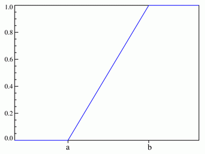 |